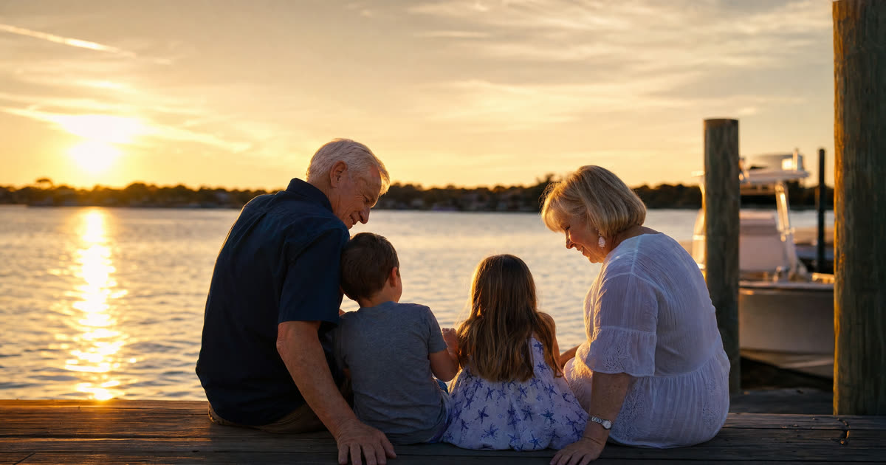

Meet Carol and Jean
Carol and Jean are a composite couple I'm using to illustrate a real and increasingly common situation, not actual clients of the firm. They are 74 and 71, they have shared a home in Gulf Breeze for twenty years, and they have never married. Like a lot of long-term partners of their generation, they hold the house as joint tenants with right of survivorship and keep their bank accounts entirely separate. It has worked well for two decades. It becomes a genuinely hard problem the moment one of them needs a nursing home.
I'm not going to re-walk the basic Florida Medicaid eligibility rules here. Truestead covers those in our general eligibility guide, our five-year lookback explainer, and our piece on whether Medicaid takes your house. This article answers one narrower question: when a couple has never married, which of Florida's spousal protections simply do not apply, and what can Carol and Jean do instead?
Have this exact situation? Talk it through with a Florida attorney — the 20-minute consultation is free.
Book Free Consult or call (888) 388-8445The gap: every spousal protection that does not reach Carol and Jean
Federal and Florida Medicaid law contain a set of rules, generally called spousal impoverishment protections, designed so the well spouse is not driven into poverty when the other spouse needs nursing home care. These rules are triggered by one fact and one fact only: a valid marriage. Here is what that means in practice for a couple like Carol and Jean.
- No Community Spouse Resource Allowance. A married applicant can generally keep a modest amount in their own name while their spouse, as the community spouse, keeps a much larger protected share of the couple's countable assets. Carol and Jean get none of this. If Jean applies for nursing home Medicaid, only Jean's own resources count toward Jean's $2,000 asset limit. Carol's separate accounts are not shielded by any spousal allowance, because there is no spouse to shield them for.
- No monthly income allowance. Married couples have a mechanism that lets income be shifted from the institutionalized spouse to the well spouse if the well spouse's own income is low. Unmarried partners have no equivalent. Each of Carol's and Jean's incomes stands alone.
- No exempt transfers between partners. Transfers of assets between spouses are exempt from Medicaid's transfer penalty rules. Transfers between unmarried partners are not. If Carol simply gave Jean money or an ownership interest to help Jean qualify, that gift is scrutinized under the standard five-year lookback and can trigger a penalty period, calculated by dividing the transferred amount by Florida's current penalty divisor.
- No automatic home exception for a non-owner partner. A homestead can remain exempt from Medicaid's asset test while occupied by the applicant, a spouse, or certain other dependents. An unmarried partner living in the home does not fit neatly into that same statutory protection the way a legal spouse does, which is why the way Carol and Jean's home is titled becomes so important.
- No spousal refusal option. Florida is one of a handful of states that allows a strategy sometimes called spousal refusal, where the well spouse declines to make their assets available, allowing the applicant spouse to qualify while the couple later addresses support obligations. This option exists because Florida law recognizes an obligation between spouses. Unmarried partners have no equivalent legal relationship to invoke, so this tool is not available to Carol and Jean at all.
The house: joint tenancy is not automatic, and it is not a Medicaid shield
Carol and Jean believe they own their Gulf Breeze home as joint tenants with right of survivorship, meaning the survivor automatically takes full ownership when the other dies, without probate. That is often what unmarried couples intend, but Florida law does not assume it. Under Florida's default rule for co-owners who are not married to each other, a deed to two people is presumed to create a tenancy in common unless the deed contains clear language creating a joint tenancy with right of survivorship. I have seen deeds decades old that everyone assumed were survivorship deeds turn out, on close reading, to be tenancies in common, which sends a share of the home through probate instead of directly to the survivor.
Even where the survivorship deed is properly drafted, it is not a Medicaid planning tool by itself. The home can remain an exempt asset for the applicant while they live there, but it is not protected from Florida's Medicaid Estate Recovery Program after the Medicaid recipient's death, except to the extent title passes automatically to the survivor outside probate. And re-titling a home to add Carol or Jean as a new co-owner, after the fact, is exactly the kind of transfer that can trigger a lookback penalty for whichever partner made the change. This is one reason Truestead's lady bird deed explainer is worth reading alongside this article: for some homeowners, an enhanced life estate deed accomplishes goals that a straightforward joint tenancy cannot.
The substitutes: what actually protects Carol and Jean
Since Carol and Jean cannot borrow the legal architecture built for spouses, their planning has to be built by hand. In my practice, that generally means:
- A properly drafted deed that says clearly what the couple intends, whether that is joint tenancy with right of survivorship, or a lady bird deed that preserves Medicaid planning flexibility while still avoiding probate.
- Durable powers of attorney naming each other. Without a spouse's automatic legal standing, Carol and Jean each need a valid Florida durable power of attorney authorizing the other to handle finances if one becomes incapacitated.
- Healthcare surrogate designations naming each other. A Florida healthcare surrogate designation lets Carol make medical decisions for Jean, and Jean for Carol, and it also matters enormously for hospital visitation. Without it, an unmarried partner has no automatic legal right to be treated as next of kin at the bedside, something a spouse never has to worry about.
- Trust and asset planning done early, well outside the five-year lookback window, since Carol and Jean cannot rely on the spousal transfer exemption to move assets between themselves later without consequence.
Frequently Asked Questions
The Truestead Takeaway
Carol and Jean's story (a composite, not an actual Truestead client) shows how much of Florida's Medicaid safety net is built around the word spouse, and how little of it reaches unmarried partners no matter how long they have shared a home. The fix isn't panic, it's structure: a deed that says what it means, powers of attorney and healthcare surrogate designations naming each other, and any asset transfers planned well ahead of a Medicaid application rather than in response to one. If you and a longtime partner are in a similar position, or you're an adult child helping an unmarried parent plan, it's worth sitting down with a Florida elder law attorney to review your deed, your documents, and your timeline before a health crisis forces the issue.
Have a child turning 18? Get the free 18 & Protected packet — the legal documents every Florida 18-year-old needs.
Get the Free PacketTalk to a Florida Attorney
Every family’s situation is different. Schedule a consultation with Arthur Simpson, Esq. to review your plan and your options under Florida law.
Schedule a Consultation →This article is for general informational purposes only and does not constitute legal advice, nor does reading it create an attorney-client relationship. Florida estate, elder, probate, and real estate law are fact-specific and change over time. Consult a licensed Florida attorney about your individual circumstances. Arthur Simpson, Esq. is licensed to practice law in the State of Florida. Attorney advertising.
Talk to a Florida Attorney — Free 20-Minute Consultation
Pick a time below. No obligation, no pressure — just answers.